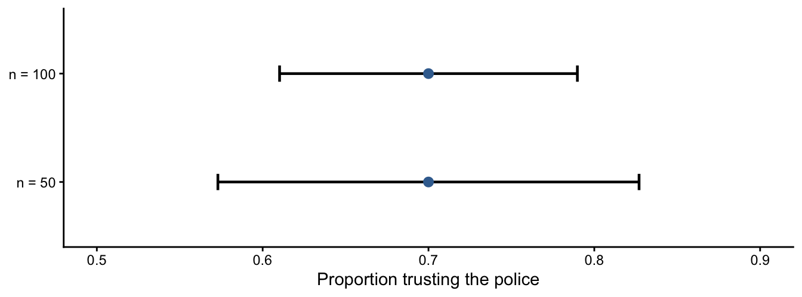

10 Estimation and Confidence Intervals
10.1 The Question
NoteCentral question
How can we use a sample to estimate an unknown population value while acknowledging uncertainty?
Suppose a city, Trustington, wants to know the proportion of residents who trust the police. Trustington is a really large city. Huge. Surveying every resident would be costly and time-consuming, so researchers select a random sample. The sample proportion provides a useful estimate, but another random sample would probably produce a somewhat different result.
A good estimate should therefore communicate two things: the value supported by the sample and the uncertainty surrounding it. A confidence interval combines both into a range of plausible values for a population parameter.
10.2 What You Will Learn
After completing this chapter, you should be able to:
- Distinguish a point estimate from an interval estimate.
- Explain the purpose of a confidence interval.
- Calculate the estimated standard error and margin of error.
- Construct 95% and 99% confidence intervals for a proportion.
- Construct confidence intervals for a mean.
- Interpret confidence intervals accurately.
- Explain how confidence level, sample size, and variability affect interval width.
10.3 Point Estimates and Interval Estimates
A point estimate is a single sample statistic used to estimate a population parameter.
| Population quantity | Parameter | Point estimate |
|---|---|---|
| Proportion | \(\pi\) | \(\hat{p}\) |
| Mean | \(\mu\) | \(\bar{x}\) |
If 70% of sampled residents say they trust the police, then:
\[ \hat{p}=0.70 \]
The value 0.70 is the point estimate of the unknown population proportion, \(\pi\).
An interval estimate gives a range of plausible values. It acknowledges that the point estimate would vary across random samples.
ImportantAn estimate is not the parameter
The sample statistic is known because it is calculated from the data. The population parameter remains unknown. The purpose of estimation is to use the statistic to learn about that parameter.
10.4 The Structure of a Confidence Interval
A confidence interval has the general form:
\[ \text{Point estimate}\pm\text{Margin of error} \]
The margin of error combines:
- a critical value, determined by the chosen confidence level; and
- the standard error, which describes expected sampling variability.
\[ ME=\text{Critical value}\times SE \]
For the confidence levels used in this chapter:
| Confidence level | Critical z-value |
|---|---|
| 95% | 1.96 |
| 99% | 2.58 |
Therefore:
\[ 95\%\ CI=\text{Point estimate}\pm1.96(SE) \]
\[ 99\%\ CI=\text{Point estimate}\pm2.58(SE) \]
10.5 Why 1.96 and 2.58?
In a standard normal distribution, approximately 95% of the area lies between \(z=-1.96\) and \(z=1.96\). Approximately 99% lies between \(z=-2.58\) and \(z=2.58\).
These critical values determine how far the interval extends on either side of the point estimate. A 99% interval uses a larger critical value and is therefore wider than a 95% interval calculated from the same sample.
NoteThe confidence–precision tradeoff
Greater confidence requires a wider interval. A wider interval is more likely to capture the parameter, but it identifies its location less precisely.
10.6 Confidence Interval for a Proportion
When the population proportion is unknown, its standard error is estimated using the sample proportion:
\[ \widehat{SE}_{\hat{p}} =\sqrt{\frac{\hat{p}(1-\hat{p})}{n}} \]
The steps are:
- Calculate the sample proportion, \(\hat{p}\).
- Calculate the estimated standard error.
- Multiply the standard error by the critical value.
- Subtract the margin of error to obtain the lower bound.
- Add the margin of error to obtain the upper bound.
10.7 Worked Example: Trust in the Police
Back to Trustington where a random sample of 100 residents finds that 70% trust the police:
\[ \hat{p}=0.70,\qquad n=100 \]
10.7.1 Step 1: Calculate the Standard Error
\[ \widehat{SE}_{\hat{p}} =\sqrt{\frac{0.70(1-0.70)}{100}} =\sqrt{0.0021} =0.0458 \]
10.7.2 Step 2: Calculate the 95% Margin of Error
\[ ME=1.96(0.0458)=0.0898 \]
10.7.3 Step 3: Construct the Interval
\[ 0.70\pm0.0898 \]
\[ (0.6102,\ 0.7898) \]
After rounding, the 95% confidence interval is approximately \((0.61,0.79)\).
10.7.4 Step 4: Interpret the Interval
We are 95% confident that the interval from 0.61 to 0.79 contains the true proportion of residents who trust the police.
In percentages, the plausible range is approximately 61% to 79%.
10.8 What Does “95% Confident” Mean?
Confidence describes the long-run performance of the method. Imagine repeatedly:
- drawing a random sample of the same size;
- calculating a sample proportion; and
- constructing a 95% confidence interval.
Over many repetitions, approximately 95% of the intervals would contain the true population proportion. Approximately 5% would miss it.
For the one interval calculated from our data, the parameter is fixed and the interval either contains it or does not. We use the phrase “95% confident” because the method succeeds approximately 95% of the time under its assumptions.
WarningA common misinterpretation
A 95% confidence interval does not mean that 95% of residents have values inside the interval. The interval estimates a population parameter, not the distribution of individual observations.
10.9 Confidence Level and Interval Width
Using the same sample, a 99% confidence interval is:
\[ ME=2.58(0.0458)=0.1182 \]
\[ 0.70\pm0.1182=(0.5818,\ 0.8182) \]
| Confidence level | Interval |
|---|---|
| 95% | \((0.6102,0.7898)\) |
| 99% | \((0.5818,0.8182)\) |
The 99% interval is wider because it must cover more of the sampling distribution.
10.10 Sample Size and Interval Width
Suppose both samples produce \(\hat{p}=0.70\):
| Sample size | Standard error | 95% confidence interval | 99% confidence interval |
|---|---|---|---|
| 50 | 0.0648 | \((0.5730,0.8270)\) | \((0.5328,0.8672)\) |
| 100 | 0.0458 | \((0.6102,0.7898)\) | \((0.5818,0.8182)\) |
The intervals have the same center because the sample proportions are equal. The larger sample produces narrower intervals because it has a smaller standard error.
WarningA large sample does not guarantee a trustworthy estimate
Larger samples reduce random sampling variability. They do not address bias in a sample, a poorly worded survey question, nonresponse, or inaccurate measurement.
10.11 Confidence Interval for a Mean
The same structure applies when estimating a population mean:
\[ \bar{x}\pm\text{Critical value}(\widehat{SE}_{\bar{x}}) \]
When the population standard deviation is unknown, we estimate the standard error using the sample standard deviation:
\[ \widehat{SE}_{\bar{x}}=\frac{s}{\sqrt{n}} \]
This chapter uses normal critical values to establish the logic of confidence intervals. A later chapter introduces the t-distribution, which is generally used for a mean when the population standard deviation is unknown.
10.12 Worked Example: Respect Ratings
Eleven residents in Authoritiville rate the statement “The police department treats residents with respect” on a 1–6 scale:
\[ 3,3,3,3,3,4,5,5,5,5,5 \]
For these data:
\[ n=11,\qquad \bar{x}=4.00,\qquad s=1.00 \]
The estimated standard error is:
\[ \widehat{SE}_{\bar{x}}=\frac{1.00}{\sqrt{11}}=0.3015 \]
Using the normal critical value, the 95% margin of error is:
\[ ME=1.96(0.3015)=0.5910 \]
The interval is:
\[ 4.00\pm0.5910=(3.409,\ 4.591) \]
We are 95% confident that this interval contains the population mean respect rating, subject to the assumptions of the method.
10.13 How Variability Affects Precision
Consider a second sample of fifteen residents in Authoritiville:
\[ 2,2,2,2,2,2,2,4,6,6,6,6,6,6,6 \]
It also has a mean of 4.00, but:
\[ n=15,\qquad s=2.00 \]
Its standard error is:
\[ \widehat{SE}_{\bar{x}}=\frac{2.00}{\sqrt{15}}=0.5164 \]
Its approximate 95% interval is:
\[ 4.00\pm1.96(0.5164)=(2.988,\ 5.012) \]
Although the second sample is larger, its interval is wider because its observations are much more variable.
ImportantWhat determines precision?
Confidence intervals become narrower with a lower confidence level, a larger sample, or less variability. They become wider with a higher confidence level, a smaller sample, or more variability.
10.14 Assumptions and Limits
Confidence intervals quantify uncertainty produced by random sampling. Their interpretation depends on the study design and assumptions.
Before interpreting an interval, ask:
- Were cases selected using a defensible sampling process?
- Are observations sufficiently independent?
- Was the variable measured consistently?
- Is the normal approximation reasonable?
- Does the population match the population named in the conclusion?
A narrow interval can be wrong when the underlying data are biased.
10.15 Check Your Understanding
A random sample of 200 residents produces \(\hat{p}=0.60\).
- Calculate the estimated standard error.
- Calculate the 95% margin of error.
- Construct the 95% confidence interval.
- Would a 99% interval be wider or narrower?
- Would increasing the sample size generally widen or narrow the interval?
NoteCheck your answers
- \(\widehat{SE}_{\hat{p}}=\sqrt{0.60(0.40)/200}=0.0346\).
- \(ME=1.96(0.0346)=0.0679\).
- The interval is \(0.60\pm0.0679=(0.5321,0.6679)\).
- A 99% interval would be wider.
- A larger sample would generally narrow the interval by reducing the standard error.
10.16 Test Your Knowledge: Trust in the Police
10.16.1 The Scenario
The City of Trustworthington asks residents, “Do you trust the Trustworthington Police Department?” In two random samples, the sample proportion answering yes is \(\hat{p}=0.70\):
- Sample 1 contains 50 residents.
- Sample 2 contains 100 residents.
10.16.2 Your Task
For each sample:
- Calculate the estimated standard error.
- Calculate the 95% confidence interval.
- Calculate the 99% confidence interval.
- Interpret both intervals in context.
- Compare the widths of the intervals.
- Explain why the sample of 100 produces more precise estimates.
- Identify one source of error not represented by the margin of error.
NoteReview the answers
| \(n\) | Estimated SE | 95% confidence interval | 99% confidence interval |
|---|---|---|---|
| 50 | 0.0648 | \((0.5730,0.8270)\) | \((0.5328,0.8672)\) |
| 100 | 0.0458 | \((0.6102,0.7898)\) | \((0.5818,0.8182)\) |
For example, the 95% interval for \(n=100\) can be interpreted as: We are 95% confident that the interval from approximately 0.61 to 0.79 contains the true proportion of Trustworthington residents who trust the police.
The sample of 100 has a smaller standard error and narrower intervals. The 99% intervals are wider than the 95% intervals. Remember that the margins of error do not address possible selection bias, nonresponse, measurement problems, or other systematic errors.
10.17 Data Investigation: Same Mean, Different Variation
Using the two respect-rating samples from Authoritiville presented earlier:
- Verify the mean and standard deviation for each sample.
- Calculate the estimated standard error of each mean.
- Construct approximate 95% and 99% intervals using 1.96 and 2.58.
- Compare the intervals.
- Explain why Sample 2 has a wider interval even though it contains more observations.
- Discuss whether treating a 1–6 rating scale as quantitative is reasonable for this exercise.
NoteCalculation check
| Sample | \(n\) | \(\bar{x}\) | \(s\) | Estimated SE | 95% interval | 99% interval |
|---|---|---|---|---|---|---|
| 1 | 11 | 4.00 | 1.00 | 0.3015 | \((3.409,4.591)\) | \((3.222,4.778)\) |
| 2 | 15 | 4.00 | 2.00 | 0.5164 | \((2.988,5.012)\) | \((2.668,5.332)\) |
These are normal-approximation intervals. The later chapter on the t-distribution will refine intervals for population means.
10.18 Project Connection
- Identify a sample mean or proportion relevant to your semester project.
- Name the population parameter it could estimate.
- Describe the sample used to calculate the estimate.
- Explain whether a confidence interval would be substantively useful.
- Identify one threat to the estimate that a confidence interval would not capture.
10.19 Looking Ahead
Confidence intervals begin with a sample statistic and identify plausible values for a population parameter. The next chapter approaches inference from another direction. Hypothesis testing begins with a proposed population value and asks whether the observed sample would be unusual if that proposal were true.
Both methods rely on the same foundation: sampling distributions, standard errors, and probability.
10.20 Chapter Summary
- A point estimate is a single sample statistic used to estimate a population parameter.
- A confidence interval combines a point estimate with a margin of error.
- The margin of error is a critical value multiplied by the standard error.
- A 95% confidence procedure captures the true parameter in approximately 95% of repeated samples under its assumptions.
- Greater confidence produces a wider interval.
- Larger samples generally produce narrower intervals.
- Greater variability produces wider intervals for a mean.
- Confidence intervals quantify random sampling uncertainty, not bias or measurement error.
- Confidence intervals should be interpreted in the context of the population, sampling process, and variable.
10.21 Key Terms
- Confidence interval: A range of plausible values for a population parameter constructed from sample data.
- Confidence level: The long-run percentage of intervals produced by a method that contain the true parameter.
- Critical value: The multiplier determined by the confidence level.
- Interval estimate: A range used to estimate a population parameter.
- Margin of error: The critical value multiplied by the standard error.
- Point estimate: A single sample statistic used to estimate a population parameter.
- Precision: The degree to which an estimate is narrowly specified, reflected by confidence-interval width.